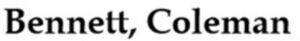

Trade Mark Journal No.2025/031 1 August 2025
WO0000001865443 (41)
Office of origin: India
Date of International Registration:14 February 2025
Date of designation in the UK:
14 February 2025

- Class 41
- Education; providing of training; entertainment; sporting and cultural activities; academies [education]; arranging and conducting of colloquiums; arranging and conducting of concerts; arranging and conducting of conferences; arranging and conducting of congresses; arranging and conducting of entertainment events; arranging and conducting of in-person educational forums; arranging and conducting of seminars; arranging and conducting of sports events; arranging and conducting of symposiums; arranging and conducting of workshops [training]; news reporters services; online publication of electronic books and journals; organization of competitions [education or entertainment]; organization of electronic sports competitions; photographic reporting; production of music, podcasts, radio and television programmes, shows, films, not downloadable, via video-on-demand services; information in the field of education; information in the field of entertainment; providing information relating to recreational activities; providing online electronic publications, not downloadable; providing online images, music, videos, not downloadable; providing television programmes, not downloadable, via video-on-demand services; publication of books; publication of texts, other than publicity texts; radio entertainment; recording studio services; rental of audio equipment; scheduling of radio and television programmes; screenplay writing; scriptwriting, other than for advertising purposes; teaching; educational services; instruction services; television entertainment; theatre productions; writing of texts; educational services provided by schools; production of shows.
Bennett, Coleman & Company Limited
Representative: INTTL ADVOCARE, F-252, Western Avenue, Sainik Farms, New Delhi 110062, INDIA